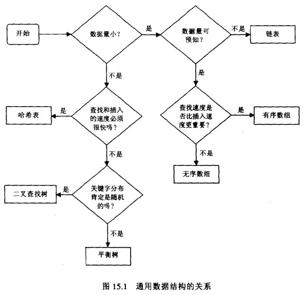

Data Structure
1 数据结构
1.1 比较
| 优点 | 缺点 | |
|---|---|---|
| 无序数组 | 插入快；如果知道下标，可以快速存取 | 查找、删除慢；大小固定 |
| 有序数组 | 查找快 | 插入、删除慢；大小固定 |
| 链表 | 插入、删除快 | 查找慢 |
| 二叉树 | 插入、删除、查找快（如果树保持平衡） | 删除算法复杂 |
| 红黑树 | 插入、删除、查找快；树总是平衡的 | 算法复杂 |
| 2-3-4 树 | 插入、删除、查找快；树总是平衡的 | 算法复杂 |
| 哈希表 | 插入、查找快（通过键查值） | 删除慢；对存储空间使用不充分 |
| 栈 | 先进后出的方式 | 除了栈顶，存取其他元素慢 |
| 队列 | 先进先出的方式 | 除了队列首尾，存取其他元素慢 |
| 堆 | 插入、删除快；查找最大（小）元素快 | 查找其他元素慢 |
| 图 | 对现实世界建模 | 某些算法慢且复杂 |
| 平均访问 | 最差访问 | 平均搜索 | 最差搜索 | 平均插入删除 | 最差插入删除 | 空间 | |
|---|---|---|---|---|---|---|---|
| Array | $O(1)$ | 同 | $O(n)$ | 同 | $O(n)$ | 同 | $O(n)$ |
| Stack | $O(n)$ | 同 | $O(n)$ | 同 | $O(1)$ | 同 | $O(n)$ |
| Single-Linked List | $O(n)$ | 同 | $O(n)$ | 同 | $O(1)$ | 同 | $O(n)$ |
| Double-Linked List | $O(n)$ | 同 | $O(n)$ | 同 | $O(1)$ | 同 | $O(n)$ |
| Skip List | $O(\log{n})$ | $O(n)$ | $O(\log{n})$ | $O(n)$ | $O(\log{n})$ | $O(n)$ | $O(n\log{n})$ |
| Binary Search Tree | $O(\log{n})$ | $O(n)$ | $O(\log{n})$ | $O(n)$ | $O(\log{n})$ | $O(n)$ | $O(n)$ |
| B Tree | $O(\log{n})$ | 同 | $O(\log{n})$ | 同 | $O(\log{n})$ | 同 | $O(n)$ |
| Red-Black Tree | $O(\log{n})$ | 同 | $O(\log{n})$ | 同 | $O(\log{n})$ | 同 | $O(n)$ |
| AVL Tree | $O(\log{n})$ | 同 | $O(\log{n})$ | 同 | $O(\log{n})$ | 同 | $O(n)$ |
| Splay Tree | - | - | $O(\log{n})$ | 同 | $O(\log{n})$ | 同 | $O(n)$ |
| Cartesian Tree | - | - | $O(\log{n})$ | $O(n)$ | $O(\log{n})$ | $O(n)$ | $O(n)$ |
| Hash Table | - | - | $O(1)$ | $O(n)$ | $O(1)$ | $O(n)$ | $O(n)$ |
1.2 选择

只有简单数据结构（数组、链表）的性能太差时，才需要使用复杂的数据结构。
2 数据类型
从结构上看，所有的数据最终都可以分解成三种类型：
| 标量（scalar） | 一个单独的字符串（string）或数字（number）。 |
|---|---|
| 序列（sequence） | 若干相关的数据按照一定顺序并列在一起。 |
| 又称数组（array）或列表（list）。 | |
| 映射（mapping） | 一组键值对（key/value），即每个数据有名称和与之对应的值。 |
| 又称散列（hash）或字典（dictionary）。 |
| Primitive types | Boolean |
|---|---|
| Character | |
| Integer | |
| Floating-point | |
| Enumerated | |
| Composite types | Array |
| Record, tuple, struct | |
| Union, tagged union | |
| Variant | |
| Abstract types | List |
| Associative array | |
| Stack, queue | |
| Tree, graph | |
| Set, multiset | |
| Container |
3 数组
一组相同类型数据的集合，存储空间相邻，可通过索引访问。
空间
适合数据量较小的场合，且大小事先可预测（存储空间足够大的情况下不重要）。
数组和计算机的存储器系统有直接的对应关系。
可以把整个计算机存储器想象成一个数组，存储器的地址和数组的索引相对应。
时间
可以假设，数组访问可以用仅仅几条机器指令完成。
使用
在引用数组元素时，需要确保：
- 索引非负数且小于数组实际大小，
- 在元素的空间里存储了有效的内容。
指向数组的指针意义重大，当作为参数传递给一个函数时，无需为整个数组创造一份拷贝，就可以访问其中的对象。
在使用大型数组时这种能力尤其重要。
4 链表
一组数据项的集合，每个元素都含有访问下一个元素所需的信息。
适合频繁地插入、删除元素的场合。
相对于数组：
- 可以迅速重新安排元素次序，
- 不能迅速访问任意一个指定元素。
当今的计算机硬件对内存是否连续更为敏感，而链表恰恰会破坏这种顺序读取。
4.1 单向链表 C 实现
4.1.1 list.h
#ifndef LIST_H #define LIST_H #include <stdlib.h> /* 链表元素 */ typedef struct ListElmt_ { void *data; struct ListElmt_ *next; } ListElmt; /* 链表 */ typedef struct List_ { int size; int (*match)(const void *key1, const void *key2); void (*destroy)(void *data); ListElmt *head; ListElmt *tail; } List; void list_init(List *list, void (*destroy)(void *data)); void list_destroy(List *list); int list_ins_next(List *list, ListElmt *element, const void *data); int list_rem_next(List *list, ListElmt *element, void **data); #define list_size(list) ((list)->size) #define list_head(list) ((list)->head) #define list_tail(list) ((list)->tail) #define list_is_head(list, element) ((element) == (list)->head ? 1 : 0) #define list_is_tail(element) ((element)->next == NULL ? 1 : 0) #define list_data(element) ((element)->data) #define list_next(element) ((element)->next) #endif
4.1.2 list.c
#include <stdlib.h> #include <string.h> #include "list.h"
- 初始化
void list_init(List *list, void (*destroy)(void *data)) { list->size = 0; list->destroy = destroy; list->head = NULL; list->tail = NULL; return; }
- 销毁
void list_destroy(List *list) { void *data; /* 遍历元素并销毁 */ while (list_size(list) > 0) { if (list_rem_next(list, NULL, (void **)&data) == 0 && list->destroy != NULL) { /* 调用自定义函数释放动态分配数据 */ list->destroy(data); } } /* 清空结构 */ memset(list, 0, sizeof(List)); return; }
- 插入元素
/* 在指定元素后插入元素 */ int list_ins_next(List *list, ListElmt *element, const void *data) { ListElmt *new_element; /* 分配空间 */ if ((new_element = (ListElmt *)malloc(sizeof(ListElmt))) == NULL) return -1; /* 插入元素 */ new_element->data = (void *)data; if (element == NULL) { /* 头部插入 */ if (list_size(list) == 0) list->tail = new_element; new_element->next = list->head; list->head = new_element; } else { /* 非头部插入 */ if (element->next == NULL) list->tail = new_element; new_element->next = element->next; element->next = new_element; } /* 元素个数增加 */ list->size++; return 0; }
- 删除元素
/* 删除指定元素后的元素 */ int list_rem_next(List *list, ListElmt *element, void **data) { ListElmt *old_element; /* 检查链表是否为空 */ if (list_size(list) == 0) return -1; /* 移除元素 */ if (element == NULL) { /* 头部移除 */ *data = list->head->data; old_element = list->head; list->head = list->head->next; if (list_size(list) == 1) list->tail = NULL; } else { /* 非头部移除 */ if (element->next == NULL) return -1; *data = element->next->data; old_element = element->next; element->next = element->next->next; if (element->next == NULL) list->tail = element; } /* 释放空间 */ free(old_element); /* 元素个数减少 */ list->size--; return 0; }
4.2 双向链表 C 实现
4.2.1 dlist.h
#ifndef DLIST_H #define DLIST_H #include <stdlib.h> typedef struct DListElmt_ { void *data; struct DListElmt_ *prev; struct DListElmt_ *next; } DListElmt; typedef struct DList_ { int size; int (*match)(const void *key1, const void *key2); void (*destroy)(void *data); DListElmt *head; DListElmt *tail; } DList; void dlist_init(DList *list, void (*destroy)(void *data)); void dlist_destroy(DList *list); int dlist_ins_next(DList *list, DListElmt *element, const void *data); int dlist_ins_prev(DList *list, DListElmt *element, const void *data); int dlist_remove(DList *list, DListElmt *element, void **data); #define dlist_size(list) ((list)->size) #define dlist_head(list) ((list)->head) #define dlist_tail(list) ((list)->tail) #define dlist_is_head(element) ((element)->prev == NULL ? 1 : 0) #define dlist_is_tail(element) ((element)->next == NULL ? 1 : 0) #define dlist_data(element) ((element)->data) #define dlist_next(element) ((element)->next) #define dlist_prev(element) ((element)->prev) #endif
4.2.2 dlist.c
#include <stdlib.h> #include <string.h> #include "dlist.h"
- 初始化
void dlist_init(DList *list, void (*destroy)(void *data)) { list->size = 0; list->destroy = destroy; list->head = NULL; list->tail = NULL; return; }
- 销毁
void dlist_destroy(DList *list) { void *data; /* 遍历元素并移除 */ while (dlist_size(list) > 0) { if (dlist_remove(list, dlist_tail(list), (void **)&data) == 0 && list->destroy != NULL) { /* 调用自定义函数释放动态分配数据 */ list->destroy(data); } } /* 清空结构 */ memset(list, 0, sizeof(DList)); return; }
- 插入元素 1
/* 在指定元素后插入元素 */ int dlist_ins_next(DList *list, DListElmt *element, const void *data) { DListElmt *new_element; /* 除非链表为空，否则不允许指定元素为 NULL */ if (element == NULL && dlist_size(list) != 0) return -1; /* 分配空间 */ if ((new_element = (DListElmt *)malloc(sizeof(DListElmt))) == NULL) return -1; /* 插入元素 */ new_element->data = (void *)data; if (dlist_size(list) == 0) { /* 插入到空链表 */ list->head = new_element; list->head->prev = NULL; list->head->next = NULL; list->tail = new_element; } else { /* 插入到非空链表 */ new_element->next = element->next; new_element->prev = element; if (element->next == NULL) list->tail = new_element; else element->next->prev = new_element; element->next = new_element; } /* 元素个数增加 */ list->size++; return 0; }
- 插入元素 2
/* 在指定元素前插入元素 */ int dlist_ins_prev(DList *list, DListElmt *element, const void *data) { DListElmt *new_element; /* 除非链表为空，否则不允许指定元素为 NULL */ if (element == NULL && dlist_size(list) != 0) return -1; /* 分配空间 */ if ((new_element = (DListElmt *)malloc(sizeof(DListElmt))) == NULL) return -1; /* 插入元素 */ new_element->data = (void *)data; if (dlist_size(list) == 0) { /* 插入到空链表 */ list->head = new_element; list->head->prev = NULL; list->head->next = NULL; list->tail = new_element; } else { /* 插入到非空链表 */ new_element->next = element; new_element->prev = element->prev; if (element->prev == NULL) list->head = new_element; else element->prev->next = new_element; element->prev = new_element; } /* 元素个数增加 */ list->size++; return 0; }
- 移除元素
int dlist_remove(DList *list, DListElmt *element, void **data) { /* 不允许指定元素为 NULL，或从空链表移除 */ if (element == NULL || dlist_size(list) == 0) return -1; /* 移除元素 */ *data = element->data; if (element == list->head) { /* 头部移除 */ list->head = element->next; if (list->head == NULL) list->tail = NULL; else element->next->prev = NULL; } else { /* 非头部移除 */ element->prev->next = element->next; if (element->next == NULL) list->tail = element->prev; else element->next->prev = element->prev; } /* 释放空间 */ free(element); /* 元素个数减少 */ list->size--; return 0; }
- 初始化
void list_init(List *list, void (*destroy)(void *data)) { list->size = 0; list->destroy = destroy; list->head = NULL; list->tail = NULL; return; }
- 销毁
void list_destroy(List *list) { void *data; /* 遍历元素并销毁 */ while (list_size(list) > 0) { if (list_rem_next(list, NULL, (void **)&data) == 0 && list->destroy != NULL) { /* 调用自定义函数释放动态分配数据 */ list->destroy(data); } } /* 清空结构 */ memset(list, 0, sizeof(List)); return; }
- 插入元素
/* 在指定元素后插入元素 */ int list_ins_next(List *list, ListElmt *element, const void *data) { ListElmt *new_element; /* 分配空间 */ if ((new_element = (ListElmt *)malloc(sizeof(ListElmt))) == NULL) return -1; /* 插入元素 */ new_element->data = (void *)data; if (element == NULL) { /* 头部插入 */ if (list_size(list) == 0) list->tail = new_element; new_element->next = list->head; list->head = new_element; } else { /* 非头部插入 */ if (element->next == NULL) list->tail = new_element; new_element->next = element->next; element->next = new_element; } /* 元素个数增加 */ list->size++; return 0; }
- 删除元素
/* 删除指定元素后的元素 */ int list_rem_next(List *list, ListElmt *element, void **data) { ListElmt *old_element; /* 检查链表是否为空 */ if (list_size(list) == 0) return -1; /* 移除元素 */ if (element == NULL) { /* 头部移除 */ *data = list->head->data; old_element = list->head; list->head = list->head->next; if (list_size(list) == 1) list->tail = NULL; } else { /* 非头部移除 */ if (element->next == NULL) return -1; *data = element->next->data; old_element = element->next; element->next = element->next->next; if (element->next == NULL) list->tail = element; } /* 释放空间 */ free(old_element); /* 元素个数减少 */ list->size--; return 0; }
4.3 循环链表 C 实现
4.3.1 clist.h
#ifndef CLIST_H #define CLIST_H #include <stdlib.h> typedef struct CListElmt_ { void *data; struct CListElmt_ *next; } CListElmt; typedef struct CList_ { int size; int (*match)(const void *key1, const void *key2); void (*destroy)(void *data); CListElmt *head; } CList; void clist_init(CList *list, void (*destroy)(void *data)); void clist_destroy(CList *list); int clist_ins_next(CList *list, CListElmt *element, const void *data); int clist_rem_next(CList *list, CListElmt *element, void **data); #define clist_size(list) ((list)->size) #define clist_head(list) ((list)->head) #define clist_data(element) ((element)->data) #define clist_next(element) ((element)->next) #endif
4.3.2 clist.c
#include <stdlib.h> #include <string.h> #include "clist.h"
- 初始化
void clist_init(CList *list, void (*destroy)(void *data)) { list->size = 0; list->destroy = destroy; list->head = NULL; return; }
- 销毁
void clist_destroy(CList *list) { void *data; /* 遍历元素并移除 */ while (clist_size(list) > 0) { if (clist_rem_next(list, list->head, (void **)&data) == 0 && list->destroy != NULL) { /* 调用自定义函数释放动态分配数据 */ list->destroy(data); } } /* 清空结构 */ memset(list, 0, sizeof(CList)); return; }
- 插入元素
int clist_ins_next(CList *list, CListElmt *element, const void *data) { CListElmt *new_element; /* 分配空间 */ if ((new_element = (CListElmt *)malloc(sizeof(CListElmt))) == NULL) return -1; /* 插入元素 */ new_element->data = (void *)data; if (clist_size(list) == 0) { /* 插入到空链表 */ new_element->next = new_element; list->head = new_element; } else { /* 插入到非空链表 */ new_element->next = element->next; element->next = new_element; } /* 元素个数增加 */ list->size++; return 0; }
- 移除元素
int clist_rem_next(CList *list, CListElmt *element, void **data) { CListElmt *old_element; /* 检查链表是否为空 */ if (clist_size(list) == 0) return -1; /* 移除元素 */ *data = element->next->data; if (element->next == element) { /* 移除最后一个元素 */ old_element = element->next; list->head = NULL; } else { /* 移除非最后一个元素 */ old_element = element->next; element->next = element->next->next; } /* 释放空间 */ free(old_element); /* 元素个数减少 */ list->size--; return 0; }
4.4 栈 C 实现（单向链表）
4.4.1 stack.h
#ifndef STACK_H #define STACK_H #include <stdlib.h> #include "list.h" /* 基于链表 */ typedef List Stack; #define stack_init list_init #define stack_destroy list_destroy int stack_push(Stack *stack, const void *data); int stack_pop(Stack *stack, void **data); #define stack_peek(stack) ((stack)->head == NULL ? NULL : (stack)->head->data) #define stack_size list_size #endif
4.4.2 stack.c
#include <stdlib.h> #include "list.h" #include "stack.h"
- 入栈
int stack_push(Stack *stack, const void *data) { return list_ins_next(stack, NULL, data); }
- 出栈
int stack_pop(Stack *stack, void **data) { return list_rem_next(stack, NULL, data); }
4.5 队列 C 实现（单向链表）
4.5.1 queue.h
#ifndef QUEUE_H #define QUEUE_H #include <stdlib.h> #include "list.h" /* 基于链表 */ typedef List Queue; #define queue_init list_init #define queue_destroy list_destroy int queue_enqueue(Queue *queue, const void *data); int queue_dequeue(Queue *queue, void **data); #define queue_peek(queue) ((queue)->head == NULL ? NULL : (queue)->head->data) #define queue_size list_size #endif
4.5.2 queue.c
#include <stdlib.h> #include "list.h" #include "queue.h"
- 入队
int queue_enqueue(Queue *queue, const void *data) { return list_ins_next(queue, list_tail(queue), data); }
- 出队
int queue_dequeue(Queue *queue, void **data) { return list_rem_next(queue, NULL, data); }
5 集合
5.1 集合 C 实现
5.1.1 set.h
#ifndef SET_H #define SET_H #include <stdlib.h> #include "list.h" typedef List Set; void set_init(Set *set, int (*match)(const void *key1, const void *key2), void (*destroy)(void *data)); #define set_destroy list_destroy int set_insert(Set *set, const void *data); int set_remove(Set *set, void **data); int set_union(Set *setu, const Set *set1, const Set *set2); int set_intersection(Set *seti, const Set *set1, const Set *set2); int set_difference(Set *setd, const Set *set1, const Set *set2); int set_is_member(const Set *set, const void *data); int set_is_subset(const Set *set1, const Set *set2); int set_is_equal(const Set *set1, const Set *set2); #define set_size(set) ((set)->size) #endif
5.1.2 set.c
#include <stdlib.h> #include <string.h> #include "list.h" #include "set.h"
- 初始化
void set_init( Set *set, int (*match)(const void *key1, const void *key2), void (*destroy)(void *data)) { list_init(set, destroy); set->match = match; return; }
- 插入元素
int set_insert(Set *set, const void *data) { /* 不允许重复元素 */ if (set_is_member(set, data)) return 1; return list_ins_next(set, list_tail(set), data); }
- 移除元素
int set_remove(Set *set, void **data) { ListElmt *member, *prev; /* 查找要移除的元素 */ prev = NULL; for (member = list_head(set); member != NULL; member = list_next(member)) { if (set->match(*data, list_data(member))) break; prev = member; } /* 未找到元素 */ if (member == NULL) return -1; return list_rem_next(set, prev, data); }
- 并集
int set_union(Set *setu, const Set *set1, const Set *set2) { ListElmt *member; void *data; /* 初始化结果集合 */ set_init(setu, set1->match, NULL); /* 插入第一个集合的元素 */ for (member = list_head(set1); member != NULL; member = list_next(member)) { data = list_data(member); if (list_ins_next(setu, list_tail(setu), data) != 0) { set_destroy(setu); return -1; } } /* 插入第二个集合的元素 */ for (member = list_head(set2); member != NULL; member = list_next(member)) { if (set_is_member(set1, list_data(member))) { /* 跳过重复元素 */ continue; } else { data = list_data(member); if (list_ins_next(setu, list_tail(setu), data) != 0) { set_destroy(setu); return -1; } } } return 0; }
- 交集
int set_intersection(Set *seti, const Set *set1, const Set *set2) { ListElmt *member; void *data; /* 初始化结果集合 */ set_init(seti, set1->match, NULL); /* 插入两个集合中共有的元素 */ for (member = list_head(set1); member != NULL; member = list_next(member)) { if (set_is_member(set2, list_data(member))) { data = list_data(member); if (list_ins_next(seti, list_tail(seti), data) != 0) { set_destroy(seti); return -1; } } } return 0; }
- 差集
int set_difference(Set *setd, const Set *set1, const Set *set2) { ListElmt *member; void *data; /* 初始化结果集合 */ set_init(setd, set1->match, NULL); /* 插入第一个集合中，不属于第二个集合的元素 */ for (member = list_head(set1); member != NULL; member = list_next(member)) { if (!set_is_member(set2, list_data(member))) { data = list_data(member); if (list_ins_next(setd, list_tail(setd), data) != 0) { set_destroy(setd); return -1; } } } return 0; }
- 成员判断
int set_is_member(const Set *set, const void *data) { ListElmt *member; for (member = list_head(set); member != NULL; member = list_next(member)) { if (set->match(data, list_data(member))) return 1; } return 0; }
- 子集判断
int set_is_subset(const Set *set1, const Set *set2) { ListElmt *member; /* 先通过集合大小进行判断 */ if (set_size(set1) > set_size(set2)) return 0; /* 遍历第一个集合的元素，判断是否属于第二个集合 */ for (member = list_head(set1); member != NULL; member = list_next(member)) { if (!set_is_member(set2, list_data(member))) return 0; } return 1; }
- 等集判断
int set_is_equal(const Set *set1, const Set *set2) { /* 先通过集合大小进行判断 */ if (set_size(set1) != set_size(set2)) return 0; /* 大小相等且第一个集合为第二个集合的子集，则集合相等 */ return set_is_subset(set1, set2); }
6 哈希表
| 优点 | 插入、查找操作接近常量时间 |
|---|---|
| 缺点 | 基于数组，创建后大小固定，难以扩展 |
| 难以对数据进行有序遍历 | |
| 一些哈希表被基本填满时，性能下降 |
6.1 哈希方法
从关键字获得哈希地址的方法。
| 直接定址法 | 以每行唯一的数字值作为关键字，如 ID |
|---|---|
| 数字分析法 | 以某列数字值的一部分作为关键字，如手机号后四位 |
| 平方取中法 | 取关键字平方后的中间几位 |
| 折叠法 | 将关键字分段，取这几部分的叠加和 |
| 除留余数法 | 取关键字被某个不大于哈希表表长的数除后所得余数 |
| 随机数法 | 选择一个随机函数，取关键字的随机函数值 |
6.2 冲突
不同的关键字可能得到同一哈希地址。
| 开放地址法 | 产生冲突时，在目标地址之后寻找空位存放数据 |
|---|---|
| 链地址法 | 数组不存放数据，而是存放数据链表，产生冲突时，在链表尾部加入新数据 |
6.3 链式哈希表 C 实现
6.3.1 chtbl.h
#ifndef CHTBL_H #define CHTBL_H #include <stdlib.h> #include "list.h" typedef struct CHTbl_ { int buckets; // 桶的个数 int (*h)(const void *key); // 哈希函数 int (*match)(const void *key1, const void *key2); // 判断键是否匹配的函数 void (*destroy)(void *data); // 销毁桶的函数 int size; // 表中元素数 List *table; // 桶链表 } CHTbl; int chtbl_init( CHTbl *htbl, int buckets, int (*h)(const void *key), int (*match)(const void *key1, const void *key2), void (*destroy)(void *data)); void chtbl_destroy(CHTbl *htbl); int chtbl_insert(CHTbl *htbl, const void *data); int chtbl_remove(CHTbl *htbl, void **data); int chtbl_lookup(const CHTbl *htbl, void **data); #define chtbl_size(htbl) ((htbl)->size) #endif
6.3.2 chtbl.c
#include <stdlib.h> #include <string.h> #include "list.h" #include "chtbl.h"
- 初始化
int chtbl_init( CHTbl *htbl, int buckets, int (*h)(const void *key), int (*match)(const void *key1, const void *key2), void (*destroy)(void*data)) { int i; /* 为桶分配空间 */ if ((htbl->table = (List *)malloc(buckets * sizeof(List))) == NULL) return -1; /* 初始化桶 */ htbl->buckets = buckets; for (i = 0; i < htbl->buckets; i++) list_init(&htbl->table[i], destroy); /* 封装函数 */ htbl->h = h; htbl->match = match; htbl->destroy = destroy; /* 初始化元素个数 */ htbl->size = 0; return 0; }
- 销毁
void chtbl_destroy(CHTbl *htbl) { int i; /* 销毁桶 */ for (i = 0; i < htbl->buckets; i++) { list_destroy(&htbl->table[i]); } /* 释放内存 */ free(htbl->table); /* 清空结构 */ memset(htbl, 0, sizeof(CHTbl)); return; }
- 插入元素
int chtbl_insert(CHTbl *htbl, const void *data) { void *temp; int bucket, retval; /* 检查元素是否重复 */ temp = (void *)data; if (chtbl_lookup(htbl, &temp) == 0) return 1; /* 将键散列化 */ bucket = htbl->h(data) % htbl->buckets; /* 将元素插入相应的桶 */ if ((retval = list_ins_next(&htbl->table[bucket], NULL, data)) == 0) htbl->size++; return retval; }
- 删除元素
int chtbl_remove(CHTbl *htbl, void **data) { ListElmt *element, *prev; int bucket; /* 将键散列化 */ bucket = htbl->h(*data) % htbl->buckets; /* 维护一个指向待删除元素的指针 */ prev = NULL; /* 遍历桶中元素 */ for (element = list_head(&htbl->table[bucket]); element != NULL; element = list_next(element)) { if (htbl->match(*data, list_data(element))) { /* 删除元素 */ if (list_rem_next(&htbl->table[bucket], prev, data) == 0) { htbl->size--; return 0; } else { return -1; } } prev = element; } return -1; }
- 查找元素
int chtbl_lookup(const CHTbl *htbl, void **data) { ListElmt *element; int bucket; /* 将键散列化 */ bucket = htbl->h(*data) % htbl->buckets; /* 遍历桶中元素 */ for (element = list_head(&htbl->table[bucket]); element != NULL; element = list_next(element)) { if (htbl->match(*data, list_data(element))) { /* 返回表中数据 */ *data = list_data(element); return 0; } } return -1; }
7 树
| 二叉查找树 | |
|---|---|
| 平衡二叉树（AVL 树） | |
| 红黑树 | |
| B- 树 | |
| B+ 树 | |
| 字典树（trie） |
7.1 遍历
| 先序（pre-order） | 根 → 左 → 右 |
|---|---|
| 中序（in-order） | 左 → 根 → 右 |
| 后序（post-order） | 左 → 右 → 根 |
7.2 B- 树
- 常用于磁盘等存储设备的一种平衡查找树；
- 每个叶子节点到达根节点的距离都一样；
8 堆
又称优先队列（priority queue）。通常是可以被看做「树」的数组，表示为二叉树时，每个节点的值都大于或小于它的子节点的值。
| Heapify | 查找极值 | 分离极值 | 提升键 | 插入 | 删除 | 合并 | |
|---|---|---|---|---|---|---|---|
| Linked list (sorted) | - | $O(1)$ | $O(1)$ | $O(n)$ | $O(n)$ | $O(1)$ | $O(m+n)$ |
| Linked list (unsorted) | - | $O(n)$ | $O(n)$ | $O(1)$ | $O(1)$ | $O(1)$ | $O(1)$ |
| Binary heap | $O(n)$ | $O(1)$ | $O(\log{n})$ | $O(\log{n})$ | $O(\log{n})$ | $O(\log{n})$ | $O(m+n)$ |
| Binomial Heap | - | $O(1)$ | $O(\log{n})$ | $O(\log{n})$ | $O(1)$ | $O(\log{n})$ | $O(\log{n})$ |
| Fibonacci heap | - | $O(1)$ | $O(\log{n})$ | $O(1)$ | $O(1)$ | $O(\log{n})$ | $O(1)$ |
9 图
| 存储 | 增加顶点 | 移除顶点 | 增加边界 | 移除边界 | 查询 | |
|---|---|---|---|---|---|---|
| Adjacency list（无向） | $O(V+E)$ | $O(1)$ | $O(V+E)$ | $O(1)$ | $O(E)$ | $O(V)$ |
| Incidence list（有向） | $O(V+E)$ | $O(1)$ | $O(E)$ | $O(1)$ | $O(E)$ | $O(E)$ |
| Adjacency matrix | $O(V^2)$ | $O(V^2)$ | $O(V^2)$ | $O(1)$ | $O(1)$ | $O(1)$ |
| Incidence matrix | $O(VE)$ | $O(VE)$ | $O(VE)$ | $O(VE)$ | $O(VE)$ | $O(E)$ |